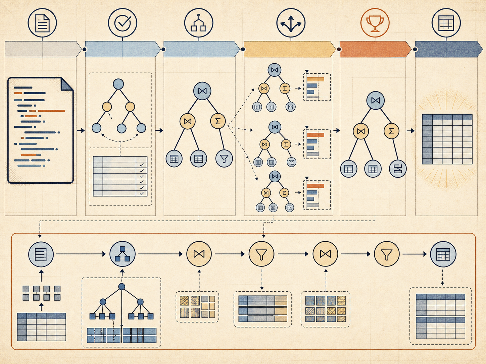
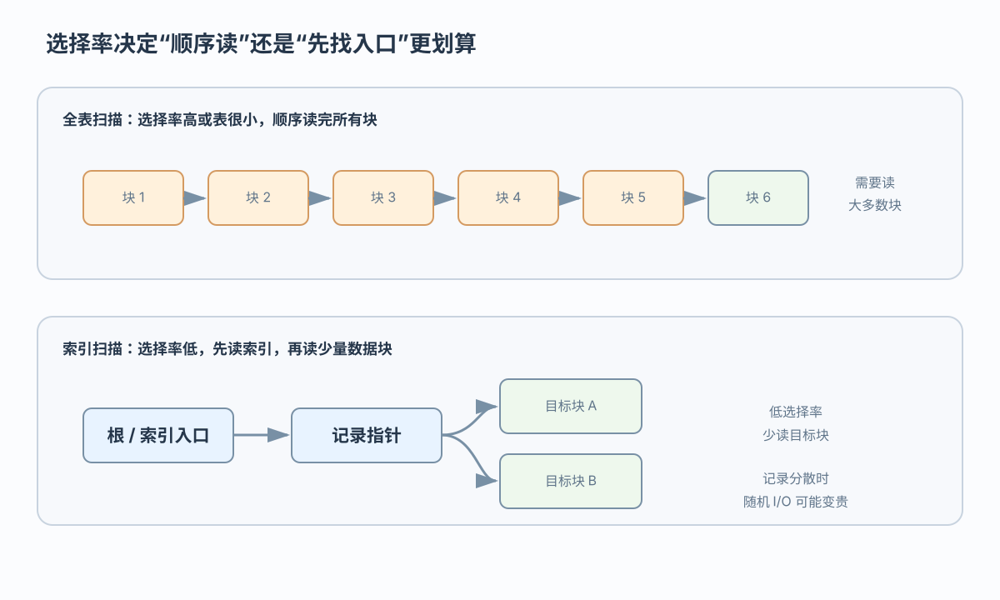
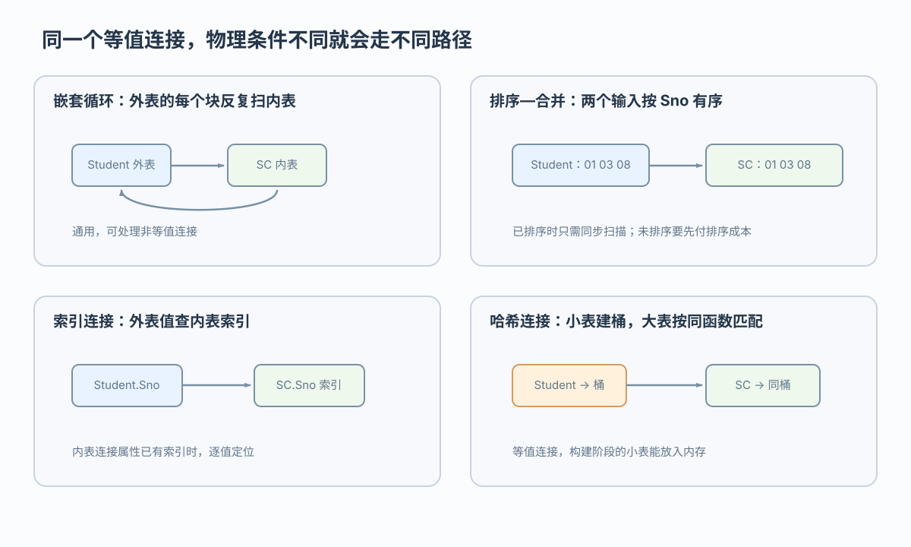

外表块数较少
嵌套循环可减少内表重复读
把 SQL 请求变成可执行的访问路径
 VER. 2608.2
Built with impress.js
VER. 2608.2
Built with impress.js
查询处理经过分析、检查、优化和执行四个阶段
用户只表达结果需求，系统负责选择操作路径

SQL 语法正确后，DBMS 还要确认它在当前数据库中有意义，再比较可行的执行路径
| 阶段 | 主要工作 | 输出或失败 |
|---|---|---|
| 查询分析 | 词法、关键字和语法 | 语法结构；语法错误 |
| 查询检查 | 表、列、视图、权限和完整性约束 | 合法的内部关系表示；对象或权限错误 |
| 查询优化 | 比较访问路径和操作算法 | 候选与选定执行策略；估计不佳 |
| 查询执行 | 生成并运行代码或计划 | 查询结果；运行时错误 |
不可以。查询检查还要核对对象、视图、权限和约束，检查通过后才形成内部关系表示
选择率 = 满足谓词的记录数 / 全部记录数
01SELECT * FROM Student WHERE Sno = '20180003';表小或选择率高时，顺序读可能更划算
低选择率时通常比全表扫描更划算，但记录分散时随机 I/O 可能抵消收益

：单点定位 ｜ Sbirthdate >=...`：范围定位 ｜ 多条件：比较索引入口与合并代价选择率低且目标记录集中时，索引更有机会获益；最终仍由优化器结合工作负载判断
输入规模和物理状态不同，最快的算法也可能不同
| 算法 | 基本思想 | 适用线索 |
|---|---|---|
| 嵌套循环 | 外表逐个匹配内表 | 外表块数较少可减少重复扫描；最通用 |
| 排序—合并 | 排序后同步扫描 | 输入已排序或排序代价可接受的等值连接 |
| 索引连接 | 外表值查内表索引 | 内表连接属性有索引，逐值查找有利 |
| 哈希连接 | 小表建桶，大表匹配 | 等值连接且建桶关系适合内存 |
不能。哈希连接主要用于等值连接；连接条件、排序状态和内表索引会改变候选算法
同一连接条件会因块数、排序、索引、内存和中间结果规模而选择不同路径

嵌套循环可减少内表重复读
排序—合并可避免或减少排序代价
索引连接可按外表值定位
哈希连接可按桶匹配
不一定。Student 只是示例；实际两侧可按块数、索引和内存条件互换
查询处理把声明式 SQL 连接到文件、块、索引和操作算法
分析、检查、优化和执行构成查询处理阶段
选择率、块数、内存和记录分布影响算法选择
嵌套循环、排序—合并、索引连接和哈希连接各有成本风险
等价变换、选择率、块 I/O 和代价估算共同支持较优计划选择
等价变换与代价估算需要结合选择率、块数和索引条件